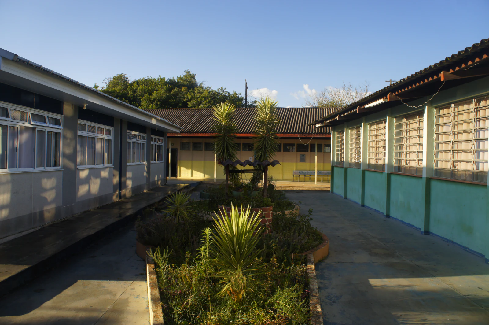

Sobre o trabalho premiado
Conheça o Friends of ScienceReconhecimento
Prêmios recebidos
Registros da conquista

Nossa comunidade
Este espaço apresenta premiações e reconhecimentos conquistados por estudantes, professores e projetos do Colégio Estadual Euzébio da Mota. Cada registro conta o contexto da participação, o trabalho reconhecido e os destaques da conquista.
Em destaque está o Friends of Science, que conquistou o 1º lugar na categoria Cultura Oceânica da FECCI 2026 com um projeto de reaproveitamento de giz de lousa.
Sobre o trabalho premiado
Conheça o Friends of ScienceReconhecimento
Registros da conquista